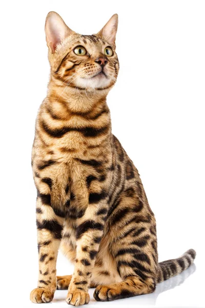

Crescent Cat Rescue was founded in hopes to reduce the rate of stray cats in the United States. With an increase of people letting their pets go without proper neutering and spaying, there has been a major increase on stray cats. This not only leads to issues with the enviornment's natural order, but also causes food scarcity amongst other animals with similar diets. We want to reduce these damages, while also providing our furry little friends a place of comfort, and a heart full of love.